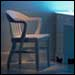

|
Richard
Kostelanetz is a writer, artist, critic, and editor who is
productive in many fields. Among his works are Recyclings:
A Literary Autobiography (1974, 1984), Politics in the
African-American Novel (1991), Published Encomia, 1967-91
(1991), and On Innovative Art(ist)s (1992). His films include
A Berlin Lost (1984) and Berlin Sche-Einena Jother
(1988), both with Martin Koerber.
*Requires Adobe Acrobat Reader. Download
it for free here.
|